Awards and activities
Samples of awards in chronological order
- International Conference on Education and Training Techonologies Excellent Presentation Award (2019). - Ziho Kang
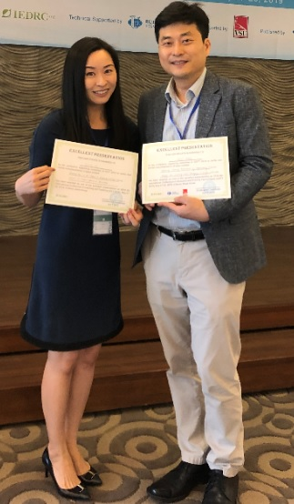
- ISE Advisory Board Scholarship (2018). - Ricardo Fraga
- Director's Graduate Scholarship (2018). - Uchenna Kelvin Egwu (right) and Amin Alhashim (left)
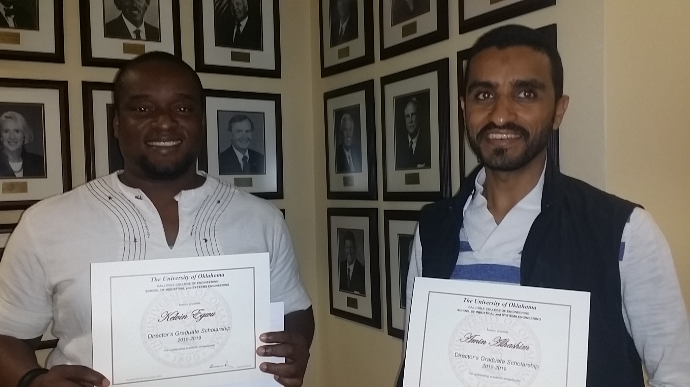
- Graduate Poster Competition Award (first place) (2018). Topic: Visualizing eye movement data in dynamic target tracking tasks - Saptarshi Mandal

- Best M.S. Thesis Award (2017-2018). Topic: Analysis of the relationships between visual scanning patterns and text comprehension levels in healthcare - Lucas Mosoni
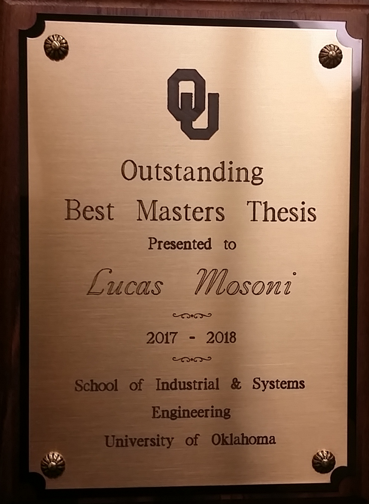
- Best Student Poster Award, Fedreal Aviaion Administration Center of Excellence Q2 SOAR Meeting, Philadelphia, PA. (2018) - Ricardo Fraga
- Invited Talk at the IEEE BioSmart Conference, Paris, France (2017). Topic: Wearable technology and data visualization - Ziho Kang
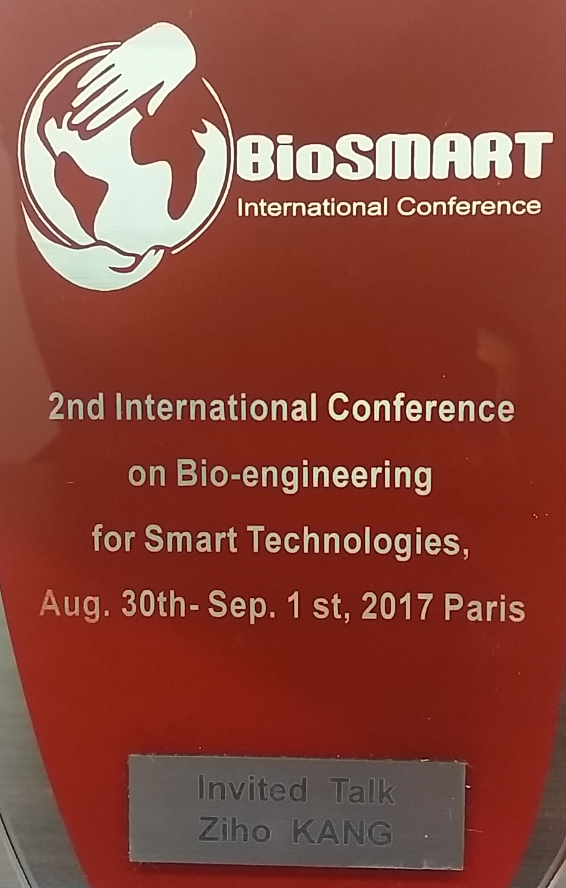
- Best Presentation Award at the IEEE BioSmart Conference, Paris, France (2017).
Title: Wearable Technologies - Real time eye movement analysis framework - Ziho Kang
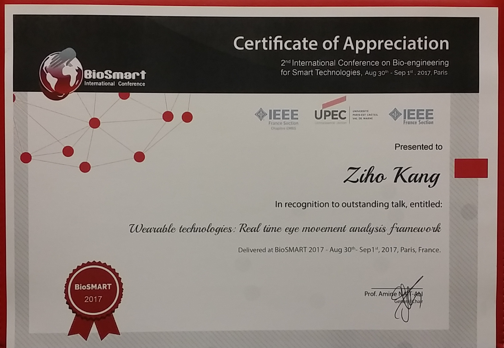
- Andrew P. Sage IEEE Best Transactions Paper Award (2016). Title: An eye movement analysis algorithm for a multi-element target tracking task - Maximum transition-based agglomerative hierarchical clustering - Ziho Kang and Steven Landry (Purdue U.)
Link to the Extended Abstract published in IEEE Magazine: Download Extended Abstract
Link to President's research development and highlights: Download Newsletter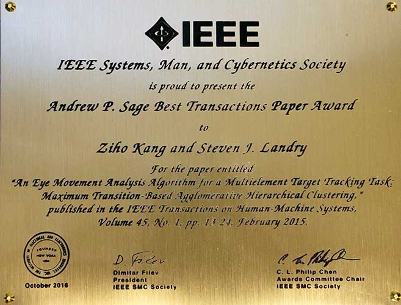
- Best M.S. Thesis Award (2016-2017). Title: Analyzing eye tracking data in a multi element moving target tracking scenario: a directed weighted network - Saptarshi Mandal
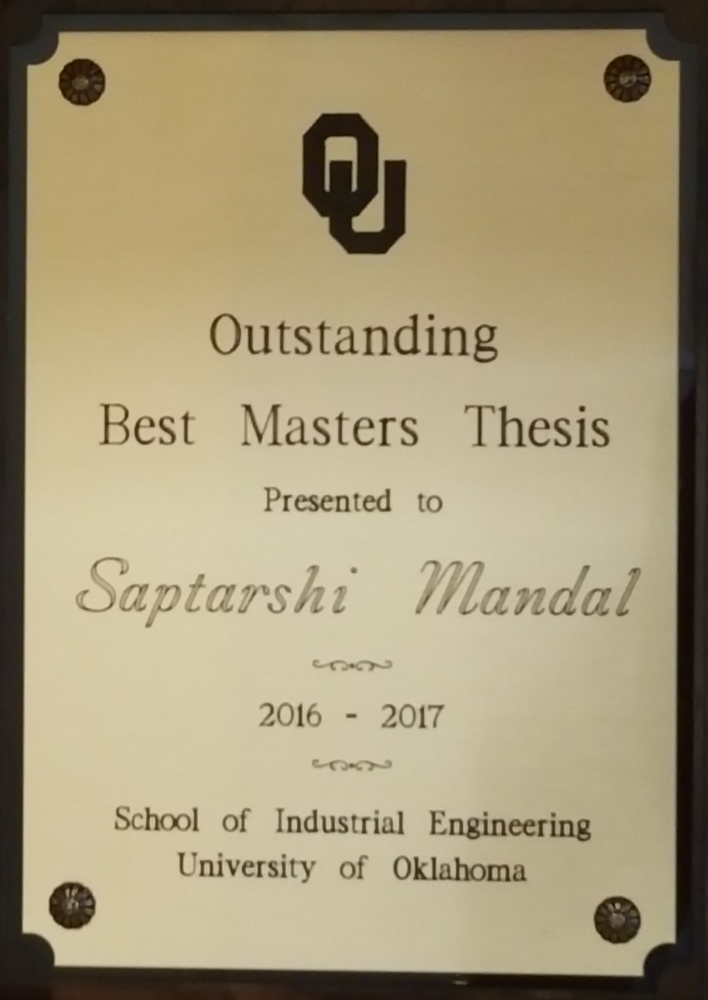
- Outstanding Senior Award (2016): Lauren Yeagle
- George T Gibson Industrial Enginieering Scholarship (2016) - Lauren Yeagle
- Lindsey F Harkness Endowed Scholarship (2016) - Mattlyn Dragoo

- Best Student Paper Award, Aerospace Technical Group, Human Factors and Ergonomics Society (2015) - Saptarshi Mandal
Samples of activities in chronological order
- NSF CAREER research collaboration (Biomedical Eng. at Drexel) and broader impacts activities (2022)
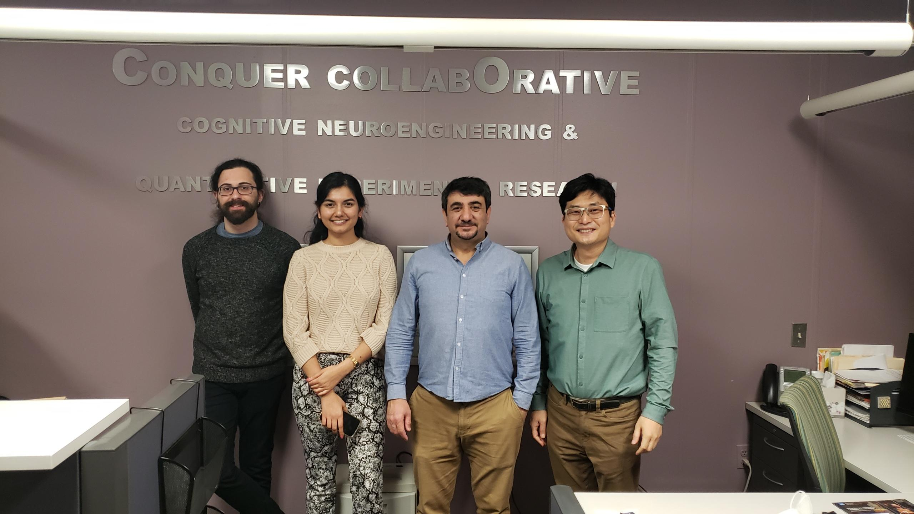
- Virtual reality tower control research kickoff at FAA CAMI (2018):
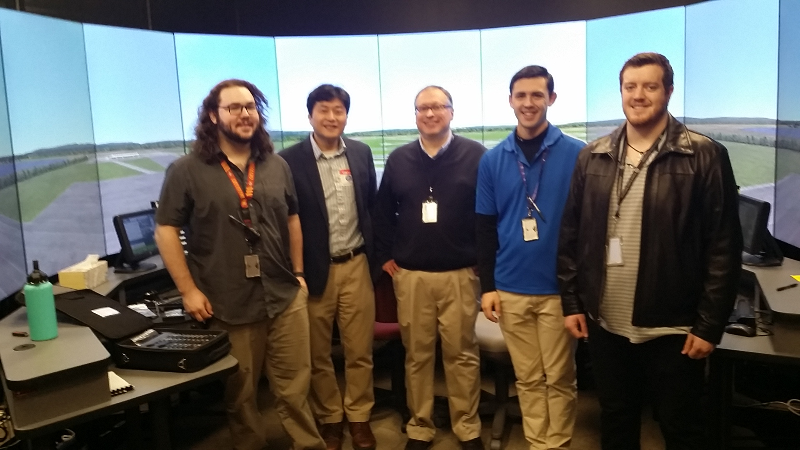
- Capstone project kickoff at FAA (2018): Using HoloLens for training
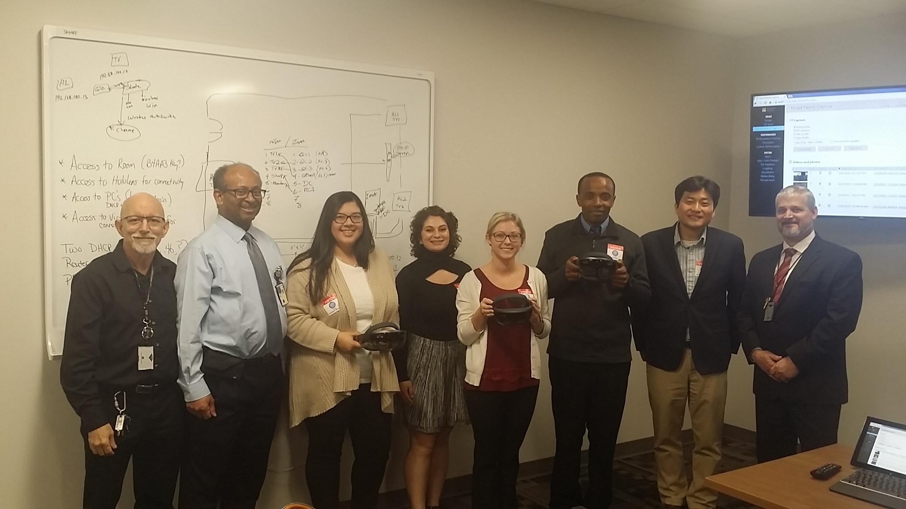
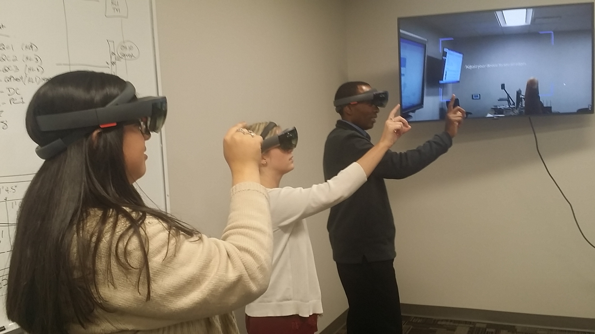
- Simulation class (2017): Field trip to Starbucks for observation and process analysis
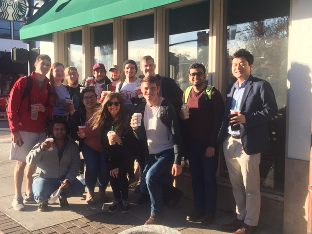
- Graduate poster competition (2017): Usability evaluation of mobile weather alert applications - Adbulrahman Khamaj
Link to poster: Download pdf file
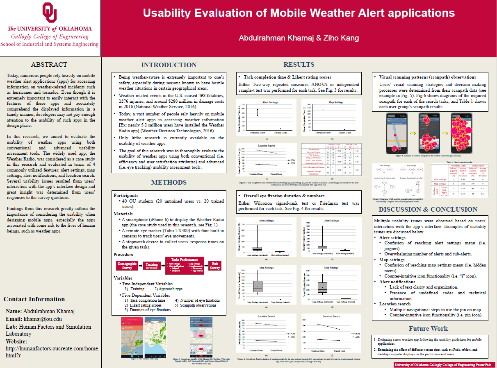
- Graduate poster competition (2017): Visualizing eye movement data in dynamic target tracking tasks
- Saptarshi Mandal
Link to poster: Download pdf file
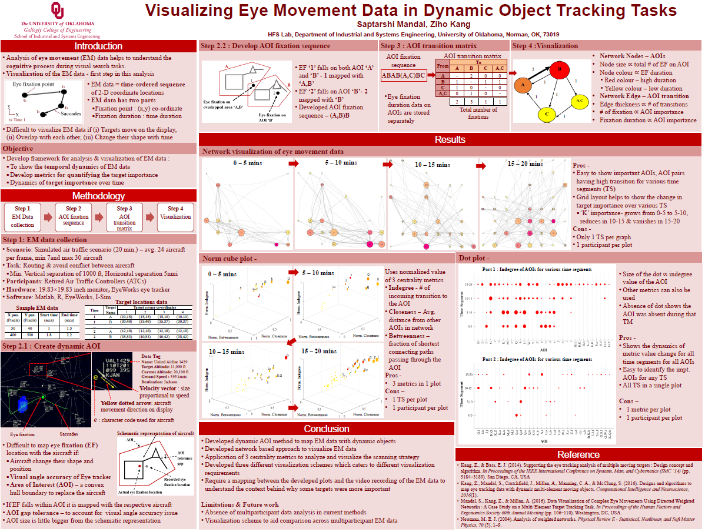